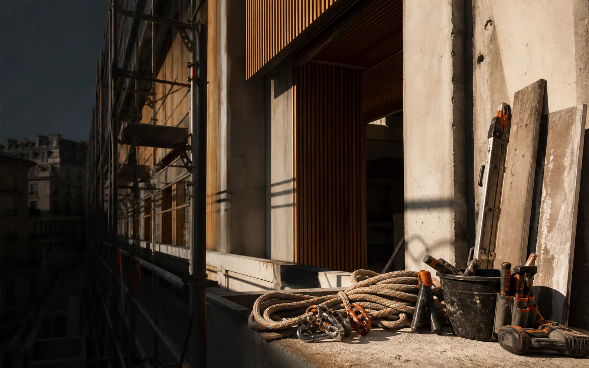

01
Reformas y acabados
Mejoras funcionales y estéticas en viviendas, locales y espacios profesionales.
- Reformas parciales o integrales
- Albañilería, pintura y pavimentos
- Parquet, tarima y madera
Atención directa y valoración previa

Reformas · mantenimiento · altura
Soluciones para viviendas, comunidades y empresas. Estudiamos el acceso, los materiales y el equipo necesario antes de ejecutar cada intervención.
Imagen ilustrativa generada para esta MVP.
Experiencia adaptable
Jhon Adolfo Suárez aporta más de 15 años de experiencia en los sectores industrial, maderero y de la construcción.
Puede intervenir directamente o coordinarse con profesionales especializados según el alcance y las habilitaciones necesarias.
Servicios
El catálogo definitivo se confirma tras valorar el proyecto y determinar qué perfiles profesionales requiere.
Mejoras funcionales y estéticas en viviendas, locales y espacios profesionales.
Reparaciones, conservación y mejoras para mantener cada espacio en buenas condiciones.
Intervenciones en altura y zonas de acceso complejo, siempre previa valoración técnica.
La ejecución de instalaciones reguladas queda condicionada a la intervención de profesionales habilitados cuando sea exigible.
Cómo trabajamos
Cada paso deja claro qué necesitamos, qué proponemos y qué se ha acordado.
Cuéntanos qué necesitas y qué resultado buscas.
Revisamos acceso, condiciones, materiales y alcance.
Detallamos trabajos, precio, plazos y condiciones.
Dimensionamos el equipo y protegemos la zona.
Revisamos y documentamos el resultado acordado.
Proyectos reales
Estas fichas muestran cómo será la galería. Las imágenes se incorporarán únicamente cuando sus derechos y privacidad estén aprobados.
La descripción y las fotografías se publicarán después de confirmar autoría, permisos y alcance real.
Esta ficha se completará con el proceso, materiales y resultado que puedan acreditarse.
Para cada necesidad
Desde una reparación concreta hasta una reforma que requiere coordinar diferentes trabajos.
Mantenimiento e intervenciones en zonas comunes, fachadas y accesos complejos.
Apoyo especializado, mantenimiento y refuerzo de equipo según las condiciones del proyecto.
Contacto
Con unos datos básicos podremos entender el proyecto y preparar una primera valoración.
Dirección pendiente de contratación y formalización. Todavía no es un domicilio operativo de Altifirme.
Permite revisar la experiencia, pero no envía ni almacena datos.